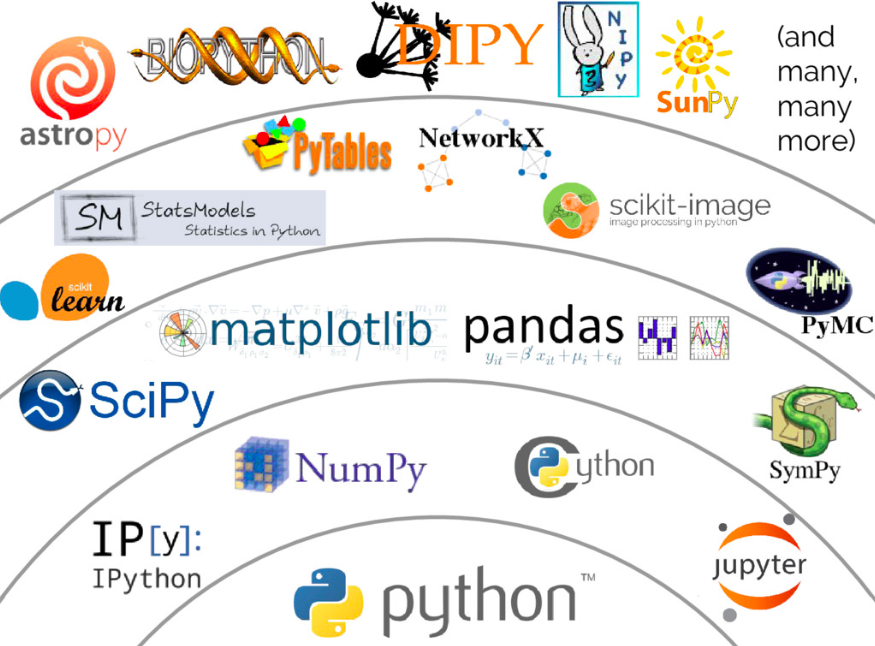
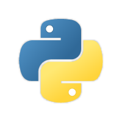
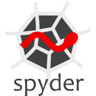
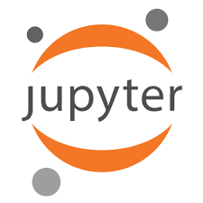
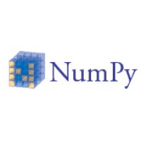
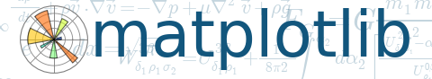
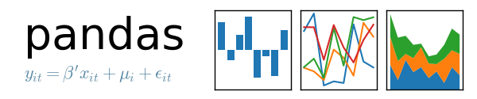
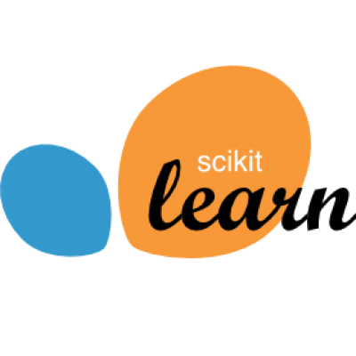
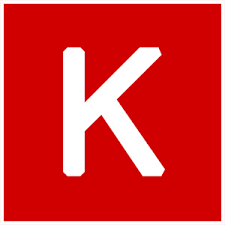

Veri Bilimciler İçin Python Ekosistemi
Veri bilimi deyince bugün akla ilk gelen programlama dillerinden biri Python. Python 1996’da doğdu, ama uzun zaman bilimsel uygulamalarda diğer dillerin gölgesinde kaldı. Hakettiği yere son on yıl içinde ulaştı ancak. Son yıllarda programlama dillerinin yaygınlığı sıralamalarında düzenli olarak ilk üçe yerleşiyor.

Bu başarının kökünde Python’un kolay öğrenilen, kolay okunan bir dil olması yatıyor. Üstelik “çıplak” bir dil değil; çok zengin bir standart kütüphane ile birlikte geliyor. Matematik fonksiyonlarından düzenli ifadelere, süreç kontrolünden HTTP’ye, hatta Tkinter grafik arayüzüne kadar. Bu, Python’un “pilleri içindedir” sloganıyla özetlenen yaklaşımından kaynaklanıyor.
Python nesneye yönelik bir dil. Python’daki her şey, tamsayılar ve karakterler bile bir nesnedir. Ama nesneye yönelik programlama yapmanız gerekmiyor. En basit kullanımda, nesneleri kullandığınızın farkında bile olmazsınız. Prosedürel programlama ile başlayıp, sonra isterseniz kendi sınıflarınızı tanımlayıp nesneye yönelik programlama yapmaya geçebilirsiniz. Python’un çeşitli fonksiyon araçlarıyla fonksiyonel programlama da yapabilirsiniz.
Python’u mevcut programlarınızı otomatik olarak çalıştırmak için kullanabilirsiniz. Bir programın çıktısını alıp, bir diğerine uygun hale getiren bir program yazarak iş akışınızı otomatikleştirebilirsiniz. Böylelikle sık yaptığınız analizleri tek bir komutla tamamlayabilir, gerektiğinde kolaylıkla tekrar üretebilirsiniz.
Yorumlanan bir dil olan Python, derlenen dillere (C, Fortran, vs.) göre daha yavaş çalışır. Bu hız farkı 20-30 kata varabilir. Ama Python’un zaman açısından başka kozları da vardır; program geliştirme sürecini kolaylaştıran bir sadeliğe sahip olması gibi. Sözgelişi, bir düz metin dosyasını tarayıp, içindeki kelimelerin istatistiklerini çıkarmak, n-gramlar oluşturmak Python’da belki bir saatte yapılabilecek bir iştir. Ama bunu C ile yapmaya çalışmak birkaç gün, veya daha fazlasını alabilir. Ortaya çıkan Python programı işini diyelim 2 dakikada tamamlasın, C programı 10 saniyede. Hangisiyle işi daha çabuk bitirdik?
Tabii bu örnek bir kerelik işlemler için geçerli. Eğer bu işi binlerce kere tekrarlamamız gerekiyorsa C programı için yatırdığımız zaman kendini amorti edebilir. Ama bu durumda bile Python yardımımıza yetişiyor. Python/C uygulama arayüzü sayesinde C programları içinde Python veri yapıları ve fonksiyonlarına erişebilir, Python’un sağladığı yüksek seviyeli işlevlerden faydalanabiliriz. Veya Python programları içinde hesaplama yükü ağır olan kısımları C ile yazıp, bir Python modülü olarak derleyebiliriz. Nitekim Numpy, SciPy, Numba gibi yüksek performanslı paketlerin hızlı çalışması gereken kısımları C ile yazılmıştır.
Python’un başarısı sadece güzel tasarımından ve kullanım kolaylığından kaynaklanmıyor. Benzer kolaylıkta başka diller de var. Sözgelişi Ruby de sade, kolay öğrenilen ve güçlü bir dildir, ama Python kadar yaygınlaşamadı. Python’un sevilmesinin en büyük sebeplerinden biri, akla gelebilecek neredeyse her uygulama alanında çok kaliteli kütüphaneler ve API’lerin geliştirilmiş olması. Örneğin Web programlama çatısı Django, üç boyutlu veri görselleme için MayaVi, bilimsel hesaplama için SciPy, veri analizi için pandas, sembolik matematik için SymPy, dinamik web sayfalarından veri almak için Scrapy, görüntü işlemek için PIL, oyun geliştirmek için PyGame, grafik arayüz oluşturmak için wxWidgets ve pyQt, ve daha niceleri…

Bugün bir veri bilimci Python’u tek başına kullanmaz. Python çekirdeğinin çevresinde oluşan bir ekosistem içindeki modüller ve yazılımlar, veri bilimcilerin alet çantasının vazgeçilmez araçlarıdır. Hepsi açık kaynaklı olan bu araçların bazılarına göz atalım.
Python çekirdeği

Python olgunlaştıkça, dilin ilk tasarımını değiştirme ihtiyacı ortaya çıktı. Bir yerden sonra anlaşıldı ki, geriye dönük uyumluluğu kaldırmadan gerekli değişiklikleri yapmak mümkün değil. O yüzden 2.6 versiyonuyla beraber 3.0 versiyonu da geliştirildi ve birlikte yayınlandı. Yeni Python’un bazı değişiklikleri, 2.x dalına da geriye dönük uyumluluğu bozmayacak şekilde aktarıldı ve 2.7 versiyonu oluştu. Bu, 2.x dalının son versiyonu oldu. Bundan sonra dilin gelişimi sadece 3.x versiyonundan yürüdü.
Hangisini kullanmalısınız? Eğer programlamaya yeni başlıyorsanız düşünmeden 3.x dalındaki en yeni versiyonu kullanın. 2.x dalı artık sadece eski kodları çalıştırmak için gerekiyor.Eğer şimdiye kadar 2.x kullandıysanız endişe etmeyin. Sözdizimi açısından iki dil arasındaki farklar çok az. Eski Python kodlarınızı 3.x’e uyumlu hale getirmek için “Porting Python 2 Code to Python 3” sayfasındaki tavsiyeleri okuyabilirsiniz.
Geliştirme arayüzü (IDE)

Bir Python programı, Python ifadeleri içeren bir metin dosyasından ibarettir. Python programı yazmak için aslında bir metin editöründen başka bir şeye ihtiyacınız yok (Word olmaz!). Ancak, yorumlanan bir dil olan Python’u etkileşimli kullanmak, mesela kod yazarken bir yandan yorumlayıcıya bazı komutlar vermek, birçok durumda hayatı kolaylaştırır. Bir IDE kullandığınızda, program editörüyle entegre bir yorumlayıcıya ulaşırsınız; komut tamamlama özelliği ile sekme tuşuna bastığınızda bağlama uyumlu olan isimleri listeler; fonksiyon çağrılarının iç belgelerine (docstrings) ulaşıp çevrimiçi yardım alabilirsiniz; programdaki hataları bulmak için bir hata ayıklayıcı kullanabilirsiniz.
Python ile beraber gelen IDLE arayüzü çok sadedir; bu özelliklerin küçük bir kısmını sağlar. Spyder daha gelişkindir; bilimsel çalışma için geliştirilen IPython yorumlayıcını kullanabilir. Daha profesyonel ve karmaşık projeler için PyCharm veya Eclipse tercih edilebilir.Alternatif olarak, emacs veya atom editörleri için hazırlanmış bazı eklemelerle, bunları bir IDE haline getirebilirsiniz.
Jupyter notebook

Jupyter notebook bugün veri bilimcilerin en çok kullandığı araçlardan biri. Bir notebook’un amacı ardışık komutları sırayla kaydetmek, komutların çıktısını kaydetmek ve gerektikçe bunları kolayca tekrar üretmektir. Özellikle etkileşimli çalışma için hazırlanırlar.
Jupyter notebook, bir çekirdek ile beraber çalışır. Bu çekirdek sadece Python olmak zorunda değildir; R, Julia, veya başka bir dille de çalışabilr. Jupyter, verilen komutu çekirdeğe yollar ve çekirdeğin gönderdiği cevabı ekrana yazar. Ayrıca, açıklamalar için kullanılabilecek düzyazı kısımları da tanımlanabilir. Bu kısımlara Markdown veya HTML formatında yazılabilir.LaTeX komutlarıyla matematiksel ifadeler yazılabilir. Böylece yaptığımız işi ayrıntısıyla adım adım anlattığımız bir laboratuar defteri üretmiş oluruz. Bir Jupyter defteri HTML veya PDF olarak dışa aktarılabilir, veya etkileşimli bir sunum haline getirilebilir.
Numpy

Python dilindeki liste yapısı genel amaçlara uygundur, ama tam da bu yüzden yavaştır. Numpy özel bir dizi tipi (array) tanımlar. Bu dizilerde bütün elemanlar aynı tiptedir (sözgelişi int64 veya float64) ve fiziksel bellekte yanyana yer alırlar. Bu düzen sayesinde dizideki herhangi bir elemana ulaşmak çok daha hızlı olur. Numpy ile istediğiniz boyut ve büyüklükte dizi nesneleri tanımlayabilir, ve bunları hızlı şekilde düzenleyebilirsiniz. Numpy’ın özel matematiksel fonksiyonları, fonksiyonu her elemana ayrı ayrı uygulayacak şekilde hazırlanmışlardır. Söz gelişi, numpy.sqrt(a) çağrısı a’nın her elemanının karekökünü alır. Bu fonksiyonlar hızlı çalışmaları için C ile kodlanmışlardır. Numpy genel amaçlı bir kütüphanedir. Yoğun hesaplama gerektiren birçok paket kendi içinde Numpy dizilerini kullanır.
Matplotlib

Python’un yarıresmi grafik ve görselleştirme paketi. Numpy üzerine kurulu. Yüksek kaliteli grafik üretmek çok kolay. matplotlib.pylab arayüzü ile Matlab benzeri komutlar kullanabilirsiniz. Çoğunlukla, ihtiyaç duyduğunuz işleri çok basit komutlarla üretebilirsiniz. Pylab arayüzünün yetersiz kaldığı durumlarda, çok daha geniş özelleştirme imkanı sunan nesne arayüzünü kullanabilirsiniz.
seaborn

Özellikle istatistiksel analizde ihtiyaç duyulan grafikleri üretmek için hazırlanmış, estetik kaygısı yüksek bir görselleme paketi. matplotlib yapısını kullanarak çeşitli grafik tiplerini kendisine göre tekrar tanımlıyor, ve matplotlib’de olmayan yeni grafik tipleri de ekliyor.
SciPy
Python’da bilimsel hesaplamanın adresi. NumPy dizileri ile çalışır. Optimizasyon, sayısal integral, diferansiyel denklemler, sinyal işleme, Fourier analizi, lineer cebir gibi sayısal işlemler için hazır fonksiyonlar sağlar.
pandas

Veri analizi için en güçlü araçlardan biri. Numpy ve matplotlib üzerine kurulu. Veri tablosu bir DataFrame nesnesi olarak saklanır. Veri sütunlarının tipleri farklı olabilir (sayısal, dize, tarih, kategorik, vs.). Sütunlar ve satırlar üzerinden kolayca filtreleme yapılabilir, tablo biçimi değiştirilebilir, CSV, Excel veya başka formlardan veri alınabilir. Veri analizinin olmazsa olmazı.
nltk
Bu kütüphane doğal dil işleme işlemlerinde öncü. Verilen bir metinde ki dil yapısını analiz etmek, kelimeleri ayrıştırmak, kökleri eklerden ayırmak, sınıflandırmak gibi işlerde kullanılan bir paket.
scikit-learn

En yaygın yapay öğrenme algoritmalarını barındıran bir paket. Numpy, SciPy ve matplotlib üzerine kurulu. Sınıflandırma, regresyon, öbekleme, model seçme, boyut indirme gibi işlemler için ilk durak. Yardım belgeleri kodu açıklamanın çok ötesine geçiyor; yapay öğrenme algoritmalarını öğreten bir ders kitabı olarak da okunabilir.
TensorFlow

Google kaynaklı bir sayısal hesaplama kütüphanesi. Hesaplamalar, veri akış çizgeleri olarak temsil edilir. Çizge noktaları matematiksel işlemleri, çizgiler ise bunlar arasında akan çok boyutlu veri dizilerini (tensörleri) temsil eder. Bu esnek yapı ile hesaplamalar CPU çekirdeklerine veya GPU’lara dağıtılabilir. İleri seviye yapay öğrenme için birebir.
Keras

Derin öğrenme için yüksek seviyeli bir sinir ağları kütüphanesi. Hesap yükünü TensorFlow’a aktarıyor, ama istenirse CNTK veya Theano da kullanabilir.
Bütün bu paketleri ihtiyacınıza göre sisteminize ayrı ayrı kurabilirsiniz. Alternatif olarak, Anaconda veya Enthought Canopy gibi bir Python dağıtımı kullanabilirsiniz. Bu dağıtımlar pek çok paketle beraber geliyorlar, ve bu paketlerin birbiriyle çatışmaması için özen gösteriliyor. Kendilerine özgü güncelleme ve kurma komutları var. Üstelik bütün paketler sizin kişisel dizininize kurulduğu için özel izinlere ihtiyaç duymuyorlar. Ofis bilgisayarınıza sorunsuzca kurabilirsiniz örneğin.